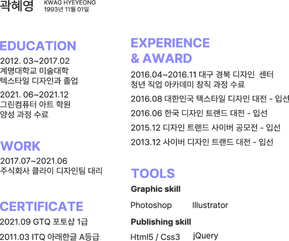
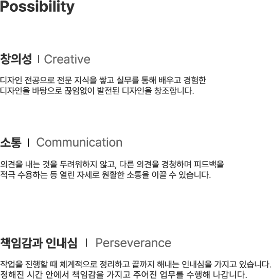

생각을 함께
공유하는디자이너
곽혜영입니다.
공유하는디자이너
곽혜영입니다.

Scroll down
Profile





Scroll down


전시관람등 영감을 주는 곳에
방문 하는 것을 좋아합니다.

가까운 곳에 방문하여
재충전하는 시간을 보냅니다.

주 3회 이상은 운동을 하여
체력관리를 위해 노력합니다.

다양한 아르바이트 경험으로
책임감과 성실함을 배우게 되었습니다.

재학생때 3년동안 보육원
봉사활동을 다녔습니다.

사람들을 만나 다양한 이야기를 나누며
소통하는 것을 좋아합니다.